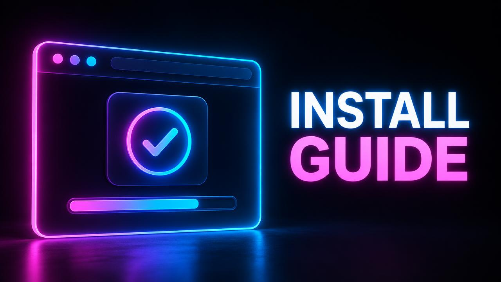

Mitu wanted a simple change: a "Book Now" button on her salon's website. She typed "add booking". The AI created a booking page, a calendar, a form and a database table. She only wanted a button linking to WhatsApp. She then spent three more prompts undoing the extra work. Four prompts for a job that needed one.
This is the most common way people waste Lovable credits: not because the AI is bad, but because the prompt did not say what they really wanted. This guide teaches you how to write better Lovable prompts with a simple formula, ready-to-use templates and real before-and-after examples.
Why Prompt Quality Controls Your Credit Usage
Every prompt is an instruction. When the instruction is unclear, the AI has to guess. Guessing leads to:
- Extra work you did not ask for
- Changes in the wrong place
- Follow-up prompts to undo or fix things
Better prompts mean fewer prompts, and fewer prompts mean lower build costs. That is the heart of Lovable prompt optimization.
The WHERE-WHAT-WHY-LIMITS Formula
Use this four-part formula for almost every prompt.
1. WHERE Which page, section or element? "On the Home page, in the top section..."
2. WHAT The exact change. "...add a button labelled Book Now..."
3. WHY The goal. "...so customers can message us on WhatsApp quickly."
4. LIMITS What must not change. "Do not create new pages. Keep the current design."
Put together:
On the Home page, in the top section, add a button labelled "Book Now" that opens WhatsApp chat with 01XXXXXXXXX, so customers can contact us quickly. Do not create new pages and keep the current design.
One prompt, exactly the right result.
Before-and-After Examples
| Weak prompt | Strong prompt |
|---|---|
| Make it modern | Use more white space, larger headings and rounded buttons on the Home page. Keep the colours. |
| Add login | Add email and password sign-up and login. After login, send users to the Dashboard page. |
| Fix the menu | On mobile, the menu does not close after tapping a link. Make it close after a tap. |
| Add products | On the Shop page, show products in a 3-column grid with image, name, price and an Add to Cart button. |
Notice that the strong prompts are specific, focused and limited.
Ready-to-Use Prompt Templates
Template 1: New Page > Create a new page called [NAME] at [LINK]. It should include [SECTIONS]. Use the same style as the Home page. Add a link to it in the main menu.
Template 2: Change an Existing Section > On the [PAGE] page, in the [SECTION] section, change [WHAT] to [NEW VERSION]. Do not change anything else on the page.
Template 3: Bug Report > On the [PAGE] page, when I [ACTION], I expected [EXPECTED], but instead [WHAT HAPPENED]. The error message is: "[EXACT ERROR]". Please find the cause and fix it.
Template 4: Plan First > I want to add [FEATURE]. Before making changes, explain your plan in simple steps and which pages will change.
Template 5: Grouped Polish > Please make these small changes: 1) [CHANGE] 2) [CHANGE] 3) [CHANGE]. Do not change anything else.
Save these templates in a note. Filling in a template takes seconds and saves many credits.
Step-by-Step: Writing a Great Prompt
- Decide the single goal of this prompt. If you have two goals, send two prompts.
- Name the location clearly.
- Describe the result, not just the action. "A three-column grid" is better than "make it nicer".
- Add the reason so the AI understands context.
- Set limits to protect what already works.
- Read it once before sending. Ask: "Could this be misunderstood?"
Common Prompt Mistakes That Waste Credits
Mistake 1: Many unrelated requests at once "Change the colour, add a blog, fix the footer and add payments" invites errors. Split them.
Mistake 2: Only saying "fix it" Without details, the AI must investigate everything. Use the bug report template.
Mistake 3: Describing a feeling, not a result "Make it pop" means different things to different people. Describe what you want to see.
Mistake 4: Forgetting limits Without limits, the AI may "improve" things you liked. Say what must stay the same.
Mistake 5: Changing your mind mid-project Decide style early. Redesigns are among the most expensive requests. See how to save Lovable credits for more.
Using Screenshots and Examples
When words are hard, show an example. Describe a website you like ("a layout like a simple news site with a large top story and small stories below") or attach a screenshot if your setup allows it. Examples remove guessing.
How to Know Your Prompt Worked
After each prompt:
- Check the preview on desktop and mobile.
- Test the exact thing you asked for.
- If it is almost right, send one precise follow-up, not a whole new request.
Mitu's Result
Mitu now uses the templates. Her next change, adding opening hours to the footer, took one prompt. Over the month, she used far fewer credits while making more improvements to her salon website.
Final Thoughts
Learning how to write better Lovable prompts is the most valuable skill for anyone who wants to use Lovable credits efficiently. Use the formula, keep the templates close and always set limits. For a broader view of costs, read Lovable credits explained. If you still need more room for big builds, check our products page.
Frequently Asked Questions
What makes a good Lovable prompt? A good prompt clearly states where the change goes, what should change, why and what must not change.
Do detailed prompts cost more credits? Usually no. Detailed prompts often save credits because the AI gets it right the first time.
How do I avoid wasting Lovable credits on mistakes? Send one goal per prompt, use the bug report template for problems and set limits to protect existing work.
Should I ask Lovable for a plan first? For large features, yes. Reviewing a plan is cheaper than undoing a wrong build.
Keep reading
If this topic is useful, you may also want to read how Lovable credits work, the Lovable credit system explained, when your credits reset and what Lovable PRO includes.
- #how to write better lovable prompts
- #lovable prompt optimization
- #avoid wasting lovable credits
- #use lovable credits efficiently